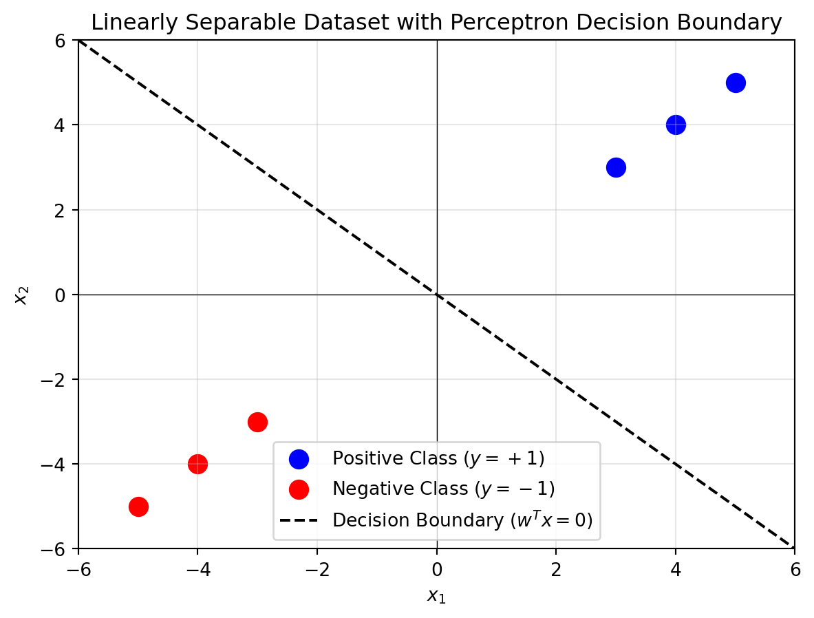

graph TD
X1(Input X1) --> W1(Weight W1)
X2(Input X2) --> W2(Weight W2)
Xn(Input Xn) --> Wn(Weight Wn)
W1 --> SUM[Summation Σ]
W2 --> SUM
Wn --> SUM
B(Bias) --> SUM
SUM --> ACT[Activation Function]
ACT --> Y(Output Y)
style SUM fill:#f9f,stroke:#333,stroke-width:2px
style ACT fill:#bbf,stroke:#333,stroke-width:2px
style Y fill:#bfb,stroke:#333,stroke-width:2px
classDef input fill:#ff9,stroke:#333,stroke-width:2px;
classDef weight fill:#9cf,stroke:#333,stroke-width:2px;
class X1,X2,Xn input;
class W1,W2,Wn weight;
1 Basics of Artificial Neural Network
1.1 Introduction to Artificial Neural Networks (ANNs)
Machine learning has undeniably become a prominent and dynamic field, with its vast array of algorithms sometimes making it challenging to discern key concepts. To gain a clearer understanding, it is valuable to explore various machine learning algorithms in greater detail, focusing not only on their theoretical foundations but also on their step-by-step implementation.
In brief, machine learning is defined as a field that enables computers to learn from data without explicit programming (Arthur Samuel, 1959). It involves the development of algorithms capable of recognizing patterns in data and making decisions based on statistical analysis, probability theory, combinatorics, and optimization techniques.
This discussion begins with an exploration of perceptrons and ADALINE (Adaptive Linear Neuron), which are part of single-layer neural networks. The perceptron is the first algorithmically defined learning algorithm and serves as an intuitive, easy-to-implement introduction to modern machine learning algorithms, particularly artificial neural networks (or “deep learning”). ADALINE, an improvement on the perceptron, provides an excellent opportunity to understand gradient descent, a widely-used optimization method in machine learning.
1.1.1 Introduction
Artificial Neural Networks (ANNs) are a class of computational models inspired by the biological neural networks in the human brain. These models have revolutionized numerous fields, including machine learning, computer vision, natural language processing, and data analytics, by mimicking the complex processing power of the human brain in a simplified computational framework. ANNs are at the core of deep learning algorithms, enabling machines to learn from vast amounts of data, recognize patterns, and make decisions with little to no human intervention.
The concept of ANNs can be traced back to the 1940s when pioneers like Warren McCulloch and Walter Pitts introduced the first simplified model of the neuron. In more intuitive terms, neurons can be understood as the subunits of a neural network in a biological brain. Here, the signals of variable magnitudes arrive at the dendrites. Those input signals are then accumulated in the cell body of the neuron, and if the accumulated signal exceeds a certain threshold, a output signal is generated that which will be passed on by the axon. This model, known as the McCulloch-Pitts neuron, was a logical abstraction that represented a binary decision-making process based on weighted inputs. However, it wasn’t until the 1980s, with the development of the backpropagation algorithm by Geoffrey Hinton and others, that ANNs began to demonstrate significant potential for learning complex patterns and tasks.
Key Concepts in Artificial Neural Networks
Neurons: The fundamental units in an ANN, inspired by biological neurons. Each neuron receives one or more inputs, processes them, and produces an output. The output is typically determined by applying an activation function to a weighted sum of the inputs.
Architecture: An ANN is composed of layers of neurons:
- Input Layer: The first layer that receives input data.
- Hidden Layers: Intermediate layers where computations occur and complex features are learned.
- Output Layer: The final layer that produces the output or prediction.
The number of layers and the number of neurons in each layer are important design considerations that influence the network’s ability to learn complex relationships.
Weights and Biases: Each connection between neurons has an associated weight, which determines the importance of the input. Biases are added to the weighted sum to allow the network to better model the data and shift the activation function.
Activation Function: The activation function introduces non-linearity into the model, enabling it to learn and represent complex patterns. Common activation functions include:
- Sigmoid: A logistic function that outputs values between 0 and 1.
- Tanh: A hyperbolic tangent function that outputs values between -1 and 1.
- ReLU (Rectified Linear Unit): Outputs zero for negative inputs and the input value itself for positive inputs, helping mitigate the vanishing gradient problem in deep networks.
Learning Process: Training an ANN involves adjusting the weights and biases through a process called optimization, typically using the gradient descent algorithm. During training, the network’s predictions are compared to the actual outcomes, and the difference, known as the loss or error, is minimized using optimization techniques.
Backpropagation: This algorithm computes the gradient of the loss function with respect to each weight by applying the chain rule of calculus. This information is used to update the weights in a way that reduces the overall error, allowing the network to improve over time.
1.1.2 Historical Development and Evolution
The origins of neural networks lie in the early 20th century, with key milestones such as the Perceptron (developed by Frank Rosenblatt in 1958) and the Backpropagation Algorithm (1986), which was a breakthrough in training multilayer networks. The development of the Deep Learning paradigm in the 2000s, fueled by advances in computing power, large datasets, and efficient algorithms, further accelerated the application of ANNs. Notable examples include Convolutional Neural Networks (CNNs) for image recognition and Recurrent Neural Networks (RNNs) for sequence modeling, such as speech and language processing.
1.1.3 Modern Applications of Artificial Neural Networks
In recent years, the ability of ANNs to perform high-level tasks has grown substantially. Some of the transformative applications include:
- Computer Vision: ANNs are used in image classification, object detection, facial recognition, and medical image analysis.
- Natural Language Processing (NLP): ANNs, particularly transformer models, power state-of-the-art techniques in machine translation, sentiment analysis, and chatbots.
- Robotics and Autonomous Systems: Neural networks enable robots to perceive their environment and make real-time decisions.
- Healthcare: ANNs are applied in predictive analytics for disease diagnosis, treatment planning, and drug discovery.
- Finance: ANNs help in fraud detection, algorithmic trading, and customer behavior prediction.
1.1.4 Challenges and Future Directions
Despite their powerful capabilities, ANNs face several challenges:
- Overfitting: Neural networks can become too specialized to the training data, losing the ability to generalize to new, unseen data.
- Interpretability: The “black-box” nature of ANNs makes it difficult to understand how they arrive at specific decisions, which can be problematic in fields requiring explainability (e.g., healthcare, law).
- Data and Computation: Training deep neural networks requires large amounts of labeled data and significant computational resources, which can be limiting in certain contexts.
Future research directions aim to address these challenges, including the development of more interpretable models, reducing the data and computation requirements, and creating more robust systems that can generalize across different domains.
1.2 Perceptron
To continue with the story, a few years after McCulloch and Walter Pitt, Frank Rosenblatt published the first concept of the Perceptron learning rule. The perceptron is one of the earliest neural network models (Rosenblatt 1957).
Frank Rosenblatt’s Perceptron
The main idea was to define an algorithm in order to learn the values of the weights \(w\) that are then multiplied with the input features in order to make a decision whether a neuron fires or not. In context of pattern classification, such an algorithm could be useful to determine if a sample belongs to one class or the other.
It models a single artificial neuron capable of binary classification for linearly separable data. Despite its limitations, the perceptron laid the foundation for more complex architectures like Multilayer Perceptrons (MLPs) and deep neural networks, which use sigmoid neurons for non-linear decision boundaries.
1.2.1 Perceptron Model
The perceptron computes a weighted sum of inputs and applies a step function for classification: \[ z = \sum_{i=1}^n w_i x_i + b \] \[ \hat{y} = \begin{cases} 1 & \text{if } z > 0 \\ 0 & \text{otherwise} \end{cases} \]
1.2.2 Perceptron Learning Rule
Weights are updated iteratively based on the error: \[ w_i \gets w_i + \eta (y - \hat{y}) x_i \] where \(\eta\) is the learning rate.
1.2.3 Perceptron Algorithm
Input: A dataset \(D = \{(x_i, y_i)\}\), where \(x_i\) is the feature vector and \(y_i\in \{+1,-1\}\) is the label.
Output: A weight vector \(\mathbf{w}\).
- Initialize \(\mathbf{w} = \mathbf{0}\).
- Repeat until convergence:
- Set \(m = 0\).
- For each \((x_i, y_i) \in D\):
- If \(y_i (\mathbf{w}^T \cdot \mathbf{x_i}) \leq 0\):
- Update \(\mathbf{w} \gets \mathbf{w} + y_i \mathbf{x_i}\).
- Increment \(m \gets m + 1\).
- If \(y_i (\mathbf{w}^T \cdot \mathbf{x_i}) \leq 0\):
- If \(m = 0\), terminate the algorithm.
Perceptron Convergence
The Perceptron was arguably the first algorithm with a strong formal guarantee. If a data set is linearly separable, the Perceptron will find a separating hyperplane in a finite number of updates. (If the data is not linearly separable, it will loop forever.)
1.2.4 Perceptron Theorem and Margin
The Perceptron Mistake Bound Theorem states that the Perceptron algorithm makes at most \(\frac{1}{\gamma^2}\) updates (mistakes), where \(\gamma\) is the margin of separability of the data. The margin is defined as the smallest distance between any data point and the decision boundary, normalized by the magnitude of the weight vector: \[ \gamma = \frac{\min_{i} y_i (\mathbf{w}^T \mathbf{x_i})}{\|\mathbf{w}\|} \] where: - \(\mathbf{w}\) is the weight vector. - \(\mathbf{x_i}\) is a data point. - \(y_i\) is the corresponding label ((+1) or (-1)).
1.2.5 Implications of the Theorem
Large Margin is Desirable:
- A larger margin \(\gamma\) implies fewer mistakes because the mistake bound decreases as \(\gamma\) increases.
- Intuitively, a larger margin means the data points are farther from the decision boundary, making them less likely to be misclassified.
Quick Convergence:
- The algorithm will converge faster on datasets with a larger margin since fewer updates (or mistakes) are required.
- Conversely, if \(\gamma\) is small (data points are closer to the boundary), the algorithm requires more updates to separate the data correctly.
1.2.6 Characterizing Data Sets for Fast Convergence
Datasets for which the Perceptron algorithm converges quickly share the following properties:
Large Margin:
- Data points are well-separated from the decision boundary.
- The decision boundary can be drawn with minimal ambiguity.
Linearly Separable Data:
- The dataset must be linearly separable for the Perceptron algorithm to converge.
- Overlapping or inseparable datasets will cause the algorithm to loop indefinitely.
1.2.7 Example of a Dataset with Large Margin
Consider the following dataset in two-dimensional space:
- Positive class (\(y_i = +1\)): Points \((3, 3), (4, 4), (5, 5)\).
- Negative class (\(y_i = -1\)): Points \((-3, -3), (-4, -4), (-5, -5)\).
The data is linearly separable with a large margin (distance between closest points and the decision boundary).
import matplotlib.pyplot as plt
import numpy as np
# Dataset
positive_points = np.array([[3, 3], [4, 4], [5, 5]])
negative_points = np.array([[-3, -3], [-4, -4], [-5, -5]])
# Define weights and bias for the Perceptron hyperplane
# Example weights (assuming the Perceptron learned these weights)
w = np.array([1, 1]) # w1 and w2
b = 0 # Bias term
# Generate x1 values for plotting
x1 = np.linspace(-6, 6, 100)
# Compute x2 values from the hyperplane equation w1*x1 + w2*x2 + b = 0
x2 = -(w[0] * x1 + b) / w[1]
# Plot the dataset
plt.scatter(positive_points[:, 0], positive_points[:, 1], color='blue', label='Positive Class ($y=+1$)', s=100)
plt.scatter(negative_points[:, 0], negative_points[:, 1], color='red', label='Negative Class ($y=-1$)', s=100)
# Plot the decision boundary (hyperplane)
plt.plot(x1, x2, color='black', linestyle='--', label='Decision Boundary ($w^T x = 0$)')
# Formatting the plot
plt.axhline(0, color='black', linewidth=0.5, linestyle='-')
plt.axvline(0, color='black', linewidth=0.5, linestyle='-')
plt.grid(alpha=0.3)
plt.legend()
plt.title('Linearly Separable Dataset with Perceptron Decision Boundary')
plt.xlabel('$x_1$')
plt.ylabel('$x_2$')
plt.xlim(-6, 6)
plt.ylim(-6, 6)
# Show the plot
plt.show()
1.2.8 Simulating OR gate using Perceptron
The following python code will simulate the OR gate using the logic of perceptron.
import numpy as np
# Step function (activation function)
def step_function(x):
return 1 if x >= 0 else 0
# Perceptron training algorithm
def perceptron(X, y, learning_rate=0.1, epochs=10):
# Initialize weights and bias
weights = np.zeros(X.shape[1])
bias = 0
# Training process
for epoch in range(epochs):
total_error = 0
for i in range(len(X)):
# Calculate weighted sum (z)
z = np.dot(X[i], weights) + bias
# Apply step function to get prediction
prediction = step_function(z)
# Calculate error
error = y[i] - prediction
total_error += abs(error)
# Update weights and bias based on the error
weights += learning_rate * error * X[i]
bias += learning_rate * error
# Optionally, print the error for each epoch
print(f'Epoch {epoch + 1}: Total Error = {total_error}')
return weights, bias
# Perceptron test function
def predict(X, weights, bias):
predictions = []
for i in range(len(X)):
z = np.dot(X[i], weights) + bias
prediction = step_function(z)
predictions.append(prediction)
return predictions
# OR Gate Inputs and Outputs
# Input X: [A, B] where A and B are the inputs
# Output y: The corresponding OR operation output
X = np.array([[0, 0],
[0, 1],
[1, 0],
[1, 1]])
y = np.array([0, 1, 1, 1]) # OR gate outputs
# Train the perceptron
weights, bias = perceptron(X, y, learning_rate=0.1, epochs=10)
# Test the perceptron
predictions = predict(X, weights, bias)
# Print predictions
print("\nPredictions:")
for i in range(len(X)):
print(f'Input: {X[i]}, Predicted Output: {predictions[i]}')Epoch 1: Total Error = 2
Epoch 2: Total Error = 2
Epoch 3: Total Error = 1
Epoch 4: Total Error = 0
Epoch 5: Total Error = 0
Epoch 6: Total Error = 0
Epoch 7: Total Error = 0
Epoch 8: Total Error = 0
Epoch 9: Total Error = 0
Epoch 10: Total Error = 0
Predictions:
Input: [0 0], Predicted Output: 0
Input: [0 1], Predicted Output: 1
Input: [1 0], Predicted Output: 1
Input: [1 1], Predicted Output: 11.2.9 Simulating AND gate using a perceptron
The perceptron model for an AND gate is shown below.
The python code for simulating the AND gate using the perceptron is shown below.
import numpy as np
# Step function (activation function)
def step_function(x):
return 1 if x >= 0 else 0
# Perceptron training algorithm
def perceptron(X, y, learning_rate=0.1, epochs=10):
# Initialize weights and bias
weights = np.zeros(X.shape[1])
bias = 0
# Training process
for epoch in range(epochs):
total_error = 0
for i in range(len(X)):
# Calculate weighted sum (z)
z = np.dot(X[i], weights) + bias
# Apply step function to get prediction
prediction = step_function(z)
# Calculate error
error = y[i] - prediction
total_error += abs(error)
# Update weights and bias based on the error
weights += learning_rate * error * X[i]
bias += learning_rate * error
# Optionally, print the error for each epoch
print(f'Epoch {epoch + 1}: Total Error = {total_error}')
return weights, bias
# Perceptron test function
def predict(X, weights, bias):
predictions = []
for i in range(len(X)):
z = np.dot(X[i], weights) + bias
prediction = step_function(z)
predictions.append(prediction)
return predictions
# OR Gate Inputs and Outputs
# Input X: [A, B] where A and B are the inputs
# Output y: The corresponding OR operation output
X = np.array([[0, 0],
[0, 1],
[1, 0],
[1, 1]])
y = np.array([0, 1, 1, 1]) # OR gate outputs
# Train the perceptron
weights, bias = perceptron(X, y, learning_rate=0.1, epochs=10)
# Test the perceptron
predictions = predict(X, weights, bias)
# Print predictions
print("\nPredictions:")
for i in range(len(X)):
print(f'Input: {X[i]}, Predicted Output: {predictions[i]}')Epoch 1: Total Error = 2
Epoch 2: Total Error = 2
Epoch 3: Total Error = 1
Epoch 4: Total Error = 0
Epoch 5: Total Error = 0
Epoch 6: Total Error = 0
Epoch 7: Total Error = 0
Epoch 8: Total Error = 0
Epoch 9: Total Error = 0
Epoch 10: Total Error = 0
Predictions:
Input: [0 0], Predicted Output: 0
Input: [0 1], Predicted Output: 1
Input: [1 0], Predicted Output: 1
Input: [1 1], Predicted Output: 11.2.10 Simulating all logic gates using the Perceptron
Here is the Python code to simulate all logic gates.
import numpy as np
class Perceptron:
def __init__(self, input_dim, learning_rate=0.01):
self.input_dim = input_dim
self.learning_rate = learning_rate
# Include bias weight with size (input_dim + 1)
self.weights = np.random.randn(input_dim + 1) * 0.01 # +1 for the bias term
def activation(self, net_input):
"""
Apply the activation function (step function).
Parameters:
net_input (numpy.ndarray): Net input values.
Returns:
numpy.ndarray: Activated output (0 or 1).
"""
return np.where(net_input > 0, 1, 0)
def predict(self, X):
"""
Perform a forward pass to calculate the output of the perceptron.
Parameters:
X (numpy.ndarray): Input data of shape (n_samples, input_dim).
Returns:
numpy.ndarray: Predicted binary outputs (0 or 1), shape (n_samples,).
"""
# Ensure X is a 2D array (n_samples, n_features)
if X.ndim == 1:
X = X.reshape(1, -1) # Reshape if it's a single sample
# Add bias term to input before predicting
X_bias = np.c_[X, np.ones(X.shape[0])] # Add bias column for prediction
net_input = np.dot(X_bias, self.weights) # Dot product with weights
return self.activation(net_input)
def train(self, X, y, epochs=100):
"""
Train the perceptron using the provided data.
Parameters:
X (numpy.ndarray): Input data of shape (n_samples, input_dim).
y (numpy.ndarray): Target labels of shape (n_samples,).
epochs (int): Number of iterations over the dataset.
"""
for epoch in range(epochs):
for xi, yi in zip(X, y):
xi_bias = np.append(xi, 1) # Add bias term manually for training
# Compute the weighted sum (net input) directly here
weighted_input = np.dot(xi_bias, self.weights) # Dot product with weights
prediction = self.activation(weighted_input) # Apply activation
error = yi - prediction # Compute error
self.weights += self.learning_rate * error * xi_bias # Update weights
# Non-member function to simulate logic gates
def simulate_logic_gate(gate_type):
"""
Simulate a logic gate using the Perceptron.
Parameters:
gate_type (str): The type of logic gate ('AND', 'OR', 'NAND', 'NOR', 'XOR').
Prints the results of the simulation.
"""
# Define input and target outputs for different gates
X = np.array([[0, 0], [0, 1], [1, 0], [1, 1]])
gate_targets = {
'AND': np.array([0, 0, 0, 1]),
'OR': np.array([0, 1, 1, 1]),
'NAND': np.array([1, 1, 1, 0]),
'NOR': np.array([1, 0, 0, 0]),
'XOR': np.array([0, 1, 1, 0])
}
if gate_type not in gate_targets:
print(f"Unsupported gate type: {gate_type}")
return
#if gate_type == 'XOR':
# print(f"Warning: XOR is not linearly separable and cannot be solved by a single perceptron!")
# return
y = gate_targets[gate_type]
# Initialize perceptron
perceptron = Perceptron(input_dim=2, learning_rate=0.1)
# Train perceptron
perceptron.train(X, y, epochs=10)
# Test predictions
print(f"Simulating {gate_type} gate")
print("Trained weights:", perceptron.weights[:-1]) # Exclude bias term from display
print("Trained bias:", perceptron.weights[-1]) # Display bias term separately
for i in range(X.shape[0]): # Iterate over the rows of X (4 samples)
input_data = X[i] # Extract the i-th row as a 1D array
prediction = perceptron.predict(input_data) # Make prediction
print(f"Input: {input_data}, Prediction: {prediction}")
# Simulate AND, OR, NAND, NOR, and XOR gatesThe simulation program is executed below:
for gate in ['AND', 'OR', 'NAND', 'NOR', 'XOR']:
simulate_logic_gate(gate)Simulating AND gate
Trained weights: [0.19498255 0.10392607]
Trained bias: -0.2882517529383646
Input: [0 0], Prediction: [0]
Input: [0 1], Prediction: [0]
Input: [1 0], Prediction: [0]
Input: [1 1], Prediction: [1]
Simulating OR gate
Trained weights: [0.1166473 0.09319517]
Trained bias: -0.09265357721473033
Input: [0 0], Prediction: [0]
Input: [0 1], Prediction: [1]
Input: [1 0], Prediction: [1]
Input: [1 1], Prediction: [1]
Simulating NAND gate
Trained weights: [-0.19887624 -0.09682712]
Trained bias: 0.20933520906978198
Input: [0 0], Prediction: [1]
Input: [0 1], Prediction: [1]
Input: [1 0], Prediction: [1]
Input: [1 1], Prediction: [0]
Simulating NOR gate
Trained weights: [-0.09794677 -0.11003972]
Trained bias: 0.09665155437250492
Input: [0 0], Prediction: [1]
Input: [0 1], Prediction: [0]
Input: [1 0], Prediction: [0]
Input: [1 1], Prediction: [0]
Simulating XOR gate
Trained weights: [-0.08718506 -0.00030597]
Trained bias: 0.012018877077856385
Input: [0 0], Prediction: [1]
Input: [0 1], Prediction: [1]
Input: [1 0], Prediction: [0]
Input: [1 1], Prediction: [0]whether the perceptron win on XOR gate? No, the perceptron cannot learn the XOR gate. This is a well-known limitation of the perceptron model, and it’s related to the fact that the XOR function is non-linearly separable.
Perceptron fails!
A perceptron can only solve problems that are linearly separable, meaning that the classes (outputs) can be separated by a straight line (or a hyperplane in higher dimensions). The XOR gate outputs 1 when the inputs are (0, 1) or (1, 0), and outputs 0 when the inputs are (0, 0) or (1, 1).
If you try to plot these points, you’ll see that you can’t separate the positive examples (output 1) from the negative examples (output 0) with a single straight line.
As solution to this problem, we need the cocept of Multi-layer perceptron.
Perceptron neuron- the foundation of modern Machine Learning
The Perceptron model, introduced by Frank Rosenblatt in 1958, marked one of the earliest developments in artificial intelligence and neural networks. Initially conceived as a model for pattern recognition and early neural computation, the Perceptron was designed to simulate a biological neuron, learning to classify inputs into two categories through a simple linear decision boundary. Despite its early promise, the limitations of the basic Perceptron were exposed in the 1960s, particularly its inability to solve non-linearly separable problems, famously highlighted in Marvin Minsky and Seymour Papert’s book Perceptrons (1969). However, with the advent of more sophisticated algorithms and architectures, such as multi-layer perceptrons (MLPs) and the backpropagation algorithm in the 1980s, the Perceptron concept was revitalized. Today, it forms the foundational concept for deep learning models and modern neural networks, which are widely applied in various fields, including image and speech recognition, natural language processing, and autonomous systems, demonstrating its enduring relevance and adaptability in tackling complex, non-linear real-world problems.
1.2.11 Introduction to the Sigmoid Activation Function
The sigmoid function, defined as
\[ \sigma(x) = \frac{1}{1 + e^{-x}}, \]
maps any real-valued input to an output between 0 and 1, making it ideal for binary classification tasks. It has played a pivotal role in the development of neural networks, especially in overcoming the limitations of the step function used in early perceptrons.
1.2.12 Historical Context
In the 1950s, Frank Rosenblatt’s perceptron used the step function, which works well for linearly separable problems but fails with more complex datasets, like the XOR problem. The introduction of the sigmoid activation function in the 1980s addressed this by enabling smooth decision boundaries and facilitating the backpropagation algorithm, allowing neural networks to learn from data effectively.
1.2.13 Relevance to Modern Neural Networks
The sigmoid function’s differentiability makes it ideal for gradient-based optimization, which is essential for training deep neural networks. Its output is a probability, making it suitable for binary classification problems. Additionally, the derivative of the sigmoid is easy to compute:
\[ \sigma'(x) = \sigma(x)(1 - \sigma(x)), \]
which aids in backpropagation by allowing efficient weight updates. Despite some limitations, such as the vanishing gradient problem, the sigmoid function is widely used in the output layers of networks for tasks requiring probabilistic outputs.
1.2.14 Applications
- Binary classification (e.g., logistic regression).
- Output layer in neural networks for binary classification.
- Probabilistic models in machine learning and AI.
While alternatives like ReLU are often used in deeper layers due to the vanishing gradient problem, sigmoid remains a powerful tool for probabilistic predictions.
1.2.15 Sigmoid Neuron
The sigmoid neuron replaces the step function with the sigmoid function: \[ \sigma(z) = \frac{1}{1 + e^{-z}} \] This allows for smooth gradients, enabling the use of backpropagation for training MLPs.
Following python code demonstrate the effective use of the sigmoid activation function in the simulation of logic gates.
import numpy as np
class Perceptron:
def __init__(self, input_dim, learning_rate=0.01):
self.input_dim = input_dim
self.learning_rate = learning_rate
# Initialize weights including bias term (input_dim + 1)
self.weights = np.random.randn(input_dim + 1) * 0.01 # +1 for bias
def sigmoid(self, x):
"""
Sigmoid activation function.
"""
return 1 / (1 + np.exp(-x))
def sigmoid_derivative(self, x):
"""
Derivative of sigmoid function.
"""
return x * (1 - x)
def activation(self, net_input):
"""
Apply sigmoid activation function to net input.
"""
return self.sigmoid(net_input)
def predict(self, X):
"""
Predict the output for given input data using the perceptron.
"""
if X.ndim == 1:
X = X.reshape(1, -1) # Reshape if it's a single sample
# Add bias term for prediction
X_bias = np.c_[X, np.ones(X.shape[0])]
net_input = np.dot(X_bias, self.weights) # Calculate net input
output = self.activation(net_input) # Apply sigmoid activation
# Apply threshold: if output > 0.5, interpret as 1; else 0
return np.where(output > 0.5, 1, 0)
def train(self, X, y, epochs=100):
"""
Train the perceptron using the provided data.
"""
for epoch in range(epochs):
for xi, yi in zip(X, y):
xi_bias = np.append(xi, 1) # Add bias term to input
net_input = np.dot(xi_bias, self.weights) # Calculate net input
prediction = self.activation(net_input) # Get the prediction
error = yi - prediction # Calculate error
# Update weights using the gradient of the sigmoid function
self.weights += self.learning_rate * error * prediction * (1 - prediction) * xi_bias
# Non-member function to simulate logic gates
def simulate_logic_gate(gate_type):
"""
Simulate a logic gate using the Perceptron.
"""
# Define input and target outputs for different gates
X = np.array([[0, 0], [0, 1], [1, 0], [1, 1]])
gate_targets = {
'AND': np.array([0, 0, 0, 1]),
'OR': np.array([0, 1, 1, 1]),
'NAND': np.array([1, 1, 1, 0]),
'NOR': np.array([1, 0, 0, 0]),
'XOR': np.array([0, 1, 1, 0])
}
if gate_type not in gate_targets:
print(f"Unsupported gate type: {gate_type}")
return
y = gate_targets[gate_type]
# Initialize perceptron
perceptron = Perceptron(input_dim=2, learning_rate=0.1)
# Train perceptron
perceptron.train(X, y, epochs=1000)
# Test predictions
print(f"Simulating {gate_type} gate")
print("Trained weights:", perceptron.weights[:-1]) # Exclude bias term from display
print("Trained bias:", perceptron.weights[-1]) # Display bias term separately
for i in range(X.shape[0]): # Iterate over the rows of X (4 samples)
input_data = X[i] # Extract the i-th row as a 1D array
prediction = perceptron.predict(input_data) # Make prediction
print(f"Input: {input_data}, Prediction: {prediction}")Simulation code is here:
for gate in ['AND', 'OR', 'NAND', 'NOR', 'XOR']:
simulate_logic_gate(gate)Simulating AND gate
Trained weights: [2.62591605 2.62222932]
Trained bias: -4.054951257335541
Input: [0 0], Prediction: [0]
Input: [0 1], Prediction: [0]
Input: [1 0], Prediction: [0]
Input: [1 1], Prediction: [1]
Simulating OR gate
Trained weights: [3.3080444 3.30966025]
Trained bias: -1.3436916260629446
Input: [0 0], Prediction: [0]
Input: [0 1], Prediction: [1]
Input: [1 0], Prediction: [1]
Input: [1 1], Prediction: [1]
Simulating NAND gate
Trained weights: [-2.62329787 -2.61964744]
Trained bias: 4.051108047248814
Input: [0 0], Prediction: [1]
Input: [0 1], Prediction: [1]
Input: [1 0], Prediction: [1]
Input: [1 1], Prediction: [0]
Simulating NOR gate
Trained weights: [-3.30968679 -3.31152847]
Trained bias: 1.3446534385164841
Input: [0 0], Prediction: [1]
Input: [0 1], Prediction: [0]
Input: [1 0], Prediction: [0]
Input: [1 1], Prediction: [0]
Simulating XOR gate
Trained weights: [-0.02476972 -0.01218682]
Trained bias: 0.012113375259234867
Input: [0 0], Prediction: [1]
Input: [0 1], Prediction: [0]
Input: [1 0], Prediction: [0]
Input: [1 1], Prediction: [0]1.3 Important Theorems and Results
- Perceptron Convergence Theorem: If the data is linearly separable, the perceptron will converge to a solution in a finite number of steps.
- Universal Approximation Theorem: An MLP with a single hidden layer and non-linear activation functions can approximate any continuous function.
1.4 Examples
1.4.1 Simple Example: Perceptron for AND Gate with native Python code
import numpy as np
# Inputs (x1, x2) and outputs (y)
X = np.array([[0, 0], [0, 1], [1, 0], [1, 1]])
y = np.array([0, 0, 0, 1]) # AND Gate Output
# Initialize weights and bias
weights = np.random.rand(2)
bias = np.random.rand(1)
learning_rate = 0.1
# Activation function
def step_function(z):
return 1 if z > 0 else 0
# Training loop
for epoch in range(10): # 10 epochs
for i in range(len(X)):
z = np.dot(X[i], weights) + bias
y_pred = step_function(z)
error = y[i] - y_pred
weights += learning_rate * error * X[i]
bias += learning_rate * error
print(f"Trained Weights: {weights}, Bias: {bias}")Trained Weights: [0.15624762 0.09191255], Bias: [-0.21553744]1.5 The Perceptron and the XOR Problem
In the early stages of neural network research, the perceptron was introduced as a simple model to classify linearly separable patterns. A perceptron consists of a single neuron, which receives input, applies weights, sums them up, and passes the result through an activation function to produce an output. For problems that can be linearly separated, a perceptron performs exceptionally well.
However, the perceptron faced a significant limitation: it cannot solve problems that are not linearly separable. A classic example is the XOR (exclusive OR) gate. The XOR gate outputs 1 only when the inputs are different (i.e., for inputs (0,1) or (1,0)), and outputs 0 when the inputs are the same (i.e., for inputs (0,0) or (1,1)). This pattern is not linearly separable, meaning it cannot be solved by a single perceptron, as the data cannot be separated with a straight line.
1.5.1 Why the Perceptron Fails at XOR
For the XOR gate, the following input-output pairs exist:
- (0, 0) → 0
- (0, 1) → 1
- (1, 0) → 1
- (1, 1) → 0
If you try to plot these points on a 2D plane, you’ll notice that no straight line can separate the 1 outputs from the 0 outputs, making the XOR problem an example of a non-linearly separable problem. This is where the perceptron fails.
1.6 Multi-Layer Perceptron (MLP)
To overcome the limitations of the perceptron, we need a more powerful model that can learn non-linear decision boundaries. The Multi-Layer Perceptron (MLP) addresses this limitation by introducing multiple layers of neurons. Unlike a single perceptron, an MLP has:
- Input Layer: Receives the input features (in this case, the two binary inputs of the XOR gate).
- Hidden Layers: One or more layers of neurons that allow the network to learn complex, non-linear mappings from input to output.
- Output Layer: Produces the final prediction (in this case, the XOR output).
The addition of hidden layers and the use of non-linear activation functions (such as sigmoid or ReLU) enables the MLP to learn and model non-linear relationships. This makes MLPs capable of solving the XOR problem, as the network can form non-linear decision boundaries.
1.7 The Need for an Appropriate Learning Algorithm in Multi-Layer Networks
In machine learning, training a multi-layer neural network (also known as a deep neural network) presents a significant challenge compared to simpler models like the Perceptron. This complexity arises from the structure of the network and the way information flows through multiple layers. The primary challenge is that the weight updates at each layer must be carefully adjusted to ensure the network learns effectively.
1.7.1 Challenge of Multi-Layer Networks
A multi-layer neural network consists of several layers:
- Input Layer: Receives the raw data.
- Hidden Layers: Transform the input into meaningful representations.
- Output Layer: Produces the final predictions or classifications.
As we move deeper into the network, each layer influences the output indirectly through many intermediate transformations. This creates a situation where updating the weights at deeper layers is not straightforward because the error at the output layer is spread across multiple layers.
1.7.2 Why a Learning Algorithm is Needed?
For multi-layer networks, we require a learning algorithm to adjust the weights effectively. In simpler models like the Perceptron, weights are updated based on the error between the predicted and actual outputs. However, for multi-layer networks, the error must be propagated back through the layers to determine how much each weight in each layer contributed to the final error.
Without a structured learning approach, the network would fail to update its weights in a coherent way, preventing it from learning the underlying patterns in the data. This is where Backpropagation comes into play.
1.7.3 Backpropagation: The Core Learning Algorithm
Backpropagation is the most widely used algorithm for training multi-layer networks. It is based on the principle of gradient descent, a method used to minimize the loss function by adjusting the weights. Here’s how backpropagation works:
- Forward Pass: The input data is passed through the network, and activations for each layer are computed.
- Loss Calculation: The error between the predicted and actual output is computed using a loss function.
- Backward Pass: The error is propagated back through the network, and gradients of the loss function with respect to each weight are computed.
- Weight Update: The weights are updated using the computed gradients.
1.7.3.1 Key Features of Backpropagation:
- Error Propagation: Backpropagation calculates how much each weight in the network contributed to the error at the output, and this error is propagated backward through the layers.
- Gradient Calculation: By using the chain rule of calculus, backpropagation calculates the gradients of the loss function with respect to each weight in the network.
- Weight Updates: These gradients are then used in gradient descent to adjust the weights in such a way that the loss function is minimized.
Gradient Descent: Not Enough by Itself
While gradient descent is a general optimization algorithm, it cannot directly address the challenge of updating weights in deep neural networks. In shallow networks (with fewer layers), gradient descent can work directly on the loss function. However, in deep networks, the error needs to be distributed back through the multiple layers. Backpropagation is the algorithm that enables this efficient error propagation, making the use of gradient descent feasible for deep networks.
1.8 Mathematical Background of Backpropagation
Backpropagation is the core learning algorithm for training multi-layer neural networks. It involves adjusting the weights of the network by computing the gradients of a loss function with respect to each weight. This process allows the network to learn how to minimize the loss and improve its predictions.
1.8.1 Loss Function
The loss function quantifies the difference between the network’s predictions and the true labels. For a simple regression task, the loss function is often the mean squared error (MSE):
\[ L = \frac{1}{2} (y - \hat{y})^2 \]
where: - \(y\) is the true label, - \(\hat{y}\) is the predicted output of the network.
The factor \(\frac{1}{2}\) is included to simplify the calculation of the derivative later.
1.8.2 Forward Pass
During the forward pass, the input \(x\) is passed through each layer of the network. Each layer computes a weighted sum of its inputs followed by a non-linear activation function \(\sigma\). The output of a neuron in layer \(l\) is calculated as:
\[ a_i^l = \sigma \left( \sum_j w_{ij}^{l-1} a_j^{l-1} + b_i^l \right) \]
where: - \(w_{ij}^{l-1}\) is the weight connecting neuron \(j\) in layer \(l-1\) to neuron \(i\) in layer \(l\), - \(a_j^{l-1}\) is the activation of neuron \(j\) in the previous layer, - \(b_i^l\) is the bias of neuron \(i\) in layer \(l\), - \(\sigma\) is the activation function (e.g., sigmoid, ReLU, etc.).
The output of the network is:
\[ \hat{y} = a^L \]
where \(L\) is the last layer.
1.8.3 Backward Pass: Computing Gradients
The main objective of backpropagation is to compute the gradients of the loss function with respect to the weights and biases of the network. This is achieved through the chain rule of calculus, which allows the error to be propagated backward through the network.
1.8.3.1 Gradient of the Loss with respect to Output Layer
The first step is to calculate the gradient of the loss function with respect to the predicted output \(\hat{y}\):
\[ \frac{\partial L}{\partial \hat{y}} = \hat{y} - y \]
For the output layer \(L\), the gradient of the loss with respect to the activation \(a_i^L\) is:
\[ \delta_i^L = \frac{\partial L}{\partial a_i^L} = \frac{\partial L}{\partial \hat{y}} \cdot \frac{\partial \hat{y}}{\partial a_i^L} \]
For a typical activation function \(\sigma\), we have:
\[ \frac{\partial \hat{y}}{\partial a_i^L} = \sigma'(a_i^L) \]
where \(\sigma'(a_i^L)\) is the derivative of the activation function at \(a_i^L\).
Thus, the error term for the output layer is:
\[ \delta_i^L = (\hat{y} - y) \cdot \sigma'(a_i^L) \]
1.8.3.3 Gradients of the Weights and Biases
After calculating the error terms, we compute the gradients of the weights and biases. The gradient of the loss with respect to the weight \(w_{ij}^l\) is:
\[ \frac{\partial L}{\partial w_{ij}^l} = a_j^{l-1} \cdot \delta_i^l \]
And the gradient of the loss with respect to the bias \(b_i^l\) is:
\[ \frac{\partial L}{\partial b_i^l} = \delta_i^l \]
1.8.4 Weight Update Rule (Gradient Descent)
Once the gradients are computed, we update the weights and biases using gradient descent. The update rule for the weights is:
\[ w_{ij}^l \leftarrow w_{ij}^l - \eta \cdot \frac{\partial L}{\partial w_{ij}^l} \]
And for the biases:
\[ b_i^l \leftarrow b_i^l - \eta \cdot \frac{\partial L}{\partial b_i^l} \]
where \(\eta\) is the learning rate, controlling the step size for weight updates.
Summary of Backpropagation
The backpropagation algorithm involves the following steps:
Forward pass: Compute the activations for each layer.
Compute loss: Calculate the loss function based on the predicted and true values.
Backward pass:
- Compute error terms for the output layer.
- Propagate error backward through the network using the chain rule.
Compute gradients: Compute the gradients of the loss with respect to weights and biases.
Update weights: Use gradient descent to adjust the weights and biases.
1.8.5 Why MLP Can Solve XOR?
The MLP can learn the XOR function by introducing hidden layers that allow it to combine the inputs in non-linear ways. A network with just one hidden layer is sufficient to approximate the XOR gate. The hidden layer transforms the inputs into a higher-dimensional space where the problem becomes linearly separable, allowing the output layer to make correct predictions.
1.9 Implementing XOR with MLP
With the MLP’s ability to model non-linearly separable data, we can now implement the XOR gate. The MLP will consist of:
- An input layer that takes in two binary values.
- A hidden layer that helps in learning the non-linear relationship.
- An output layer that produces the binary XOR result.
We will train the MLP on the four possible inputs for the XOR gate and use backpropagation to update the weights in the network, eventually enabling the MLP to predict the XOR output correctly.
In the next code implementation, we will implement the XOR gate using an MLP, demonstrating how the network can learn the XOR function through training.
import numpy as np
class Perceptron:
def __init__(self, input_dim, output_dim, activation="sigmoid"):
self.input_dim = input_dim
self.output_dim = output_dim
self.activation = activation
self.weights = np.random.randn(input_dim, output_dim)
self.biases = np.zeros((1, output_dim))
def forward(self, inputs):
self.inputs = inputs # Store inputs for later use in backpropagation
z = np.dot(inputs, self.weights) + self.biases
if self.activation == "sigmoid":
self.output = 1 / (1 + np.exp(-z)) # Store output for backpropagation
return self.output
elif self.activation == "relu":
self.output = np.maximum(0, z)
return self.output
else: # Linear activation by default
self.output = z
return self.output
def backward(self, output_error, learning_rate):
if self.activation == "sigmoid":
activation_derivative = self.output * (1 - self.output)
elif self.activation == "relu":
activation_derivative = np.where(self.output > 0, 1, 0)
else: # Linear activation
activation_derivative = 1
delta = output_error * activation_derivative
input_error = np.dot(delta, self.weights.T)
# Update weights and biases
self.weights += learning_rate * np.dot(self.inputs.T, delta)
self.biases += learning_rate * np.sum(delta, axis=0, keepdims=True)
return input_error
class MLP:
def __init__(self, input_dim, hidden_dim, output_dim, learning_rate=0.1):
self.layers = [
Perceptron(input_dim, hidden_dim, activation="sigmoid"),
Perceptron(hidden_dim, output_dim, activation="sigmoid")
]
self.learning_rate = learning_rate
def forward(self, X):
output = X
for layer in self.layers:
output = layer.forward(output)
return output
def train(self, X, y, epochs=10000):
for epoch in range(epochs):
# Forward pass
output = self.forward(X)
# Backward pass (backpropagation)
error = y - output
for layer in reversed(self.layers):
error = layer.backward(error, self.learning_rate)
if epoch % 1000 == 0:
loss = np.mean(np.square(y - self.forward(X)))
print(f'Epoch {epoch}, Loss: {loss}')
def predict(self, X):
return np.round(self.forward(X))
def simulate_logic_gate(gate_type):
X = np.array([[0, 0], [0, 1], [1, 0], [1, 1]])
gate_targets = {
'XOR': np.array([[0], [1], [1], [0]]) # XOR output
}
if gate_type not in gate_targets:
print(f"Unsupported gate type: {gate_type}")
return
y = gate_targets[gate_type]
mlp = MLP(input_dim=2, hidden_dim=2, output_dim=1, learning_rate=0.1)
mlp.train(X, y, epochs=10000)
print(f"Simulating {gate_type} gate")
for input_data, prediction in zip(X, mlp.predict(X)):
print(f"Input: {input_data}, Prediction: {prediction}")
simulate_logic_gate('XOR')Epoch 0, Loss: 0.255295280231149
Epoch 1000, Loss: 0.22686866220906776
Epoch 2000, Loss: 0.12394747722959651
Epoch 3000, Loss: 0.023914693380518173
Epoch 4000, Loss: 0.010461269736354674
Epoch 5000, Loss: 0.006385752812267632
Epoch 6000, Loss: 0.004514959615043102
Epoch 7000, Loss: 0.0034617110935167665
Epoch 8000, Loss: 0.00279294282209194
Epoch 9000, Loss: 0.0023333487860607554
Simulating XOR gate
Input: [0 0], Prediction: [0.]
Input: [0 1], Prediction: [1.]
Input: [1 0], Prediction: [1.]
Input: [1 1], Prediction: [0.]Above Python code creates a successful MLP with two (fixed) hidden layers that simulate the XOR gate. There is no golden rule to fix number of hidden layers in an MLP to solve a specific problem. So we have to restructure the OOPs architecture of MLP to handle its structure in more robust way. In this approach, the user can ‘add’ as many layers as he wish to develop a required MLP architecture. Following code will do this job.
import numpy as np
class Layer:
def __init__(self, output_dim, activation="sigmoid"):
self.output_dim = output_dim
self.activation = activation
self.weights = None # Will be initialized later
self.biases = None # Will be initialized later
self.inputs = None # Will store inputs for backpropagation
def forward(self, inputs):
self.inputs = inputs # Store inputs for backpropagation
z = np.dot(inputs, self.weights) + self.biases
if self.activation == "sigmoid":
self.output = 1 / (1 + np.exp(-z)) # Store output for backpropagation
return self.output
elif self.activation == "relu":
self.output = np.maximum(0, z)
return self.output
else: # Linear activation by default
self.output = z
return self.output
def backward(self, output_error, learning_rate):
if self.activation == "sigmoid":
activation_derivative = self.output * (1 - self.output)
elif self.activation == "relu":
activation_derivative = np.where(self.output > 0, 1, 0)
else: # Linear activation
activation_derivative = 1
delta = output_error * activation_derivative
input_error = np.dot(delta, self.weights.T)
# Update weights and biases
self.weights += learning_rate * np.dot(self.inputs.T, delta)
self.biases += learning_rate * np.sum(delta, axis=0, keepdims=True)
return input_error
class MLP:
def __init__(self, input_dim, learning_rate=0.1):
self.input_dim = input_dim
self.learning_rate = learning_rate
self.layers = []
def add(self, layer):
self.layers.append(layer)
def compile(self):
# Initialize weights and biases for each layer
prev_dim = self.input_dim
for layer in self.layers:
layer.weights = np.random.randn(prev_dim, layer.output_dim)
layer.biases = np.zeros((1, layer.output_dim))
prev_dim = layer.output_dim
def forward(self, X):
output = X
for layer in self.layers:
output = layer.forward(output)
return output
def train(self, X, y, epochs=10000):
for epoch in range(epochs):
# Forward pass
output = self.forward(X)
# Backward pass (backpropagation)
error = y - output
for layer in reversed(self.layers):
error = layer.backward(error, self.learning_rate)
if epoch % 1000 == 0:
loss = np.mean(np.square(y - self.forward(X)))
print(f'Epoch {epoch}, Loss: {loss}')
def predict(self, X):
return np.round(self.forward(X))
def simulate_logic_gate(gate_type):
X = np.array([[0, 0], [0, 1], [1, 0], [1, 1]])
gate_targets = {
'AND': np.array([[0], [0], [0], [1]]),
'OR': np.array([[0], [1], [1], [1]]),
'NAND': np.array([[1], [1], [1], [0]]),
'NOR': np.array([[1], [0], [0], [0]]),
'XOR': np.array([[0], [1], [1], [0]])
}
if gate_type not in gate_targets:
print(f"Unsupported gate type: {gate_type}")
return
y = gate_targets[gate_type]
mlp = MLP(input_dim=2, learning_rate=0.1)
mlp.add(Layer(output_dim=2, activation="relu")) # Hidden layer with ReLU
mlp.add(Layer(output_dim=2, activation="sigmoid"))
mlp.add(Layer(output_dim=1, activation="sigmoid")) # Output layer with sigmoid
mlp.compile() # Initialize weights and biases
mlp.train(X, y, epochs=10000)
print(f"Simulating {gate_type} gate")
for input_data, prediction in zip(X, mlp.predict(X)):
print(f"Input: {input_data}, Prediction: {prediction}")
simulate_logic_gate('XOR')Epoch 0, Loss: 0.26675111093118614
Epoch 1000, Loss: 0.17207706006267234
Epoch 2000, Loss: 0.16779137618476658
Epoch 3000, Loss: 0.16724944687955118
Epoch 4000, Loss: 0.16704977869177204
Epoch 5000, Loss: 0.1669495367953534
Epoch 6000, Loss: 0.1668898844069387
Epoch 7000, Loss: 0.16684954673672653
Epoch 8000, Loss: 0.1668241650269377
Epoch 9000, Loss: 0.16680207123082322
Simulating XOR gate
Input: [0 0], Prediction: [0.]
Input: [0 1], Prediction: [1.]
Input: [1 0], Prediction: [0.]
Input: [1 1], Prediction: [0.]1.10 Performance Metrics: A Critical Component of Prediction Problems
In machine learning and predictive modeling, simply achieving a correct output is not sufficient to evaluate the effectiveness of a model. Various performance measures are essential for assessing the quality and reliability of predictions. These metrics provide a deeper understanding of how well the model performs across different aspects of a dataset.
1.10.1 Confusion Matrix
The confusion matrix summarizes the results of a binary classification task. It includes:
- True Positives (TP): Correctly predicted positive cases.
- True Negatives (TN): Correctly predicted negative cases.
- False Positives (FP): Incorrectly predicted positive cases (Type I error).
- False Negatives (FN): Incorrectly predicted negative cases (Type II error).
| Predicted Positive | Predicted Negative | |
|---|---|---|
| Actual Positive | TP | FN |
| Actual Negative | FP | TN |
1.10.2 Accuracy
Accuracy is the proportion of correctly classified cases out of the total number of cases:
\[ \text{Accuracy} = \frac{TP + TN}{TP + TN + FP + FN} \]
Interpretation: Accuracy is a straightforward measure but can be misleading for imbalanced datasets. For example, in fraud detection with a 99:1 class ratio, a model predicting all cases as non-fraud achieves 99% accuracy but fails to detect fraud.
1.10.3 Precision
Precision measures the proportion of true positive predictions out of all positive predictions:
\[ \text{Precision} = \frac{TP}{TP + FP} \]
Interpretation: High precision indicates a low false positive rate, which is crucial in domains like medical diagnostics, where false alarms can lead to unnecessary procedures.
1.10.4 Recall (Sensitivity)
Recall (or sensitivity) is the proportion of actual positives correctly identified:
\[ \text{Recall} = \frac{TP}{TP + FN} \]
Interpretation: Recall is critical when false negatives are costly, such as in cancer detection.
1.10.5 Specificity
Specificity measures the proportion of actual negatives correctly identified:
\[ \text{Specificity} = \frac{TN}{TN + FP} \]
Interpretation: Specificity is important when the cost of false positives is high, such as in spam email detection.
1.10.6 F1 Score
The F1 score combines precision and recall into a single metric using their harmonic mean:
\[ F1 = 2 \cdot \frac{\text{Precision} \cdot \text{Recall}}{\text{Precision} + \text{Recall}} \]
Interpretation: The F1 score is useful when there is a trade-off between precision and recall and provides a balanced view of model performance.
1.10.7 Relation to Hypothesis Testing
In statistical hypothesis testing:
- Type I Error: Rejecting the null hypothesis when it is true (analogous to FP).
- Type II Error: Failing to reject the null hypothesis when it is false (analogous to FN).
| Error Type | Confusion Matrix Component | Hypothesis Testing Relation |
|---|---|---|
| Type I Error | FP | Reject a true null hypothesis |
| Type II Error | FN | Fail to reject a false null hypothesis |
1.10.8 Balancing Errors
The trade-off between Type I and Type II errors in hypothesis testing corresponds to optimizing precision and recall in machine learning. For instance, increasing sensitivity (recall) often reduces specificity, analogous to increasing the power of a test at the cost of a higher false positive rate.
1.10.9 Choosing Metrics
- Use precision to minimize inconveniences caused by legitimate emails being flagged as spam.
- Use recall to ensure spam emails are effectively caught.
- Optimize the F1 score for a balanced performance.
1.10.10 Interpretation of Results: Simulating XOR Gate with MLP as a classification problem
Now let’s redesign the XOR gate problem as a classification problem. The Multilayer Perceptron (MLP) was tested on the XOR gate problem, producing the following predictions and performance metrics:
import numpy as np
class Layer:
def __init__(self, output_dim, activation="sigmoid"):
self.output_dim = output_dim
self.activation = activation
self.weights = None # Will be initialized later
self.biases = None # Will be initialized later
self.inputs = None # Will store inputs for backpropagation
def forward(self, inputs):
self.inputs = inputs # Store inputs for backpropagation
z = np.dot(inputs, self.weights) + self.biases
if self.activation == "sigmoid":
self.output = 1 / (1 + np.exp(-z)) # Store output for backpropagation
return self.output
elif self.activation == "relu":
self.output = np.maximum(0, z)
return self.output
else: # Linear activation by default
self.output = z
return self.output
def backward(self, output_error, learning_rate):
if self.activation == "sigmoid":
activation_derivative = self.output * (1 - self.output)
elif self.activation == "relu":
activation_derivative = np.where(self.output > 0, 1, 0)
else: # Linear activation
activation_derivative = 1
delta = output_error * activation_derivative
input_error = np.dot(delta, self.weights.T)
# Update weights and biases
self.weights += learning_rate * np.dot(self.inputs.T, delta)
self.biases += learning_rate * np.sum(delta, axis=0, keepdims=True)
return input_error
class MLP:
def __init__(self, input_dim, learning_rate=0.1):
self.input_dim = input_dim
self.learning_rate = learning_rate
self.layers = []
def add(self, layer):
self.layers.append(layer)
def compile(self):
# Initialize weights and biases for each layer
prev_dim = self.input_dim
for layer in self.layers:
layer.weights = np.random.randn(prev_dim, layer.output_dim)
layer.biases = np.zeros((1, layer.output_dim))
prev_dim = layer.output_dim
def forward(self, X):
output = X
for layer in self.layers:
output = layer.forward(output)
return output
def train(self, X, y, epochs=10000):
for epoch in range(epochs):
# Forward pass
output = self.forward(X)
# Backward pass (backpropagation)
error = y - output
for layer in reversed(self.layers):
error = layer.backward(error, self.learning_rate)
if epoch % 1000 == 0:
loss = np.mean(np.square(y - self.forward(X)))
print(f'Epoch {epoch}, Loss: {loss}')
def predict(self, X):
return np.round(self.forward(X))
def calculate_performance_metrics(y_true, y_pred):
TP = np.sum((y_true == 1) & (y_pred == 1))
TN = np.sum((y_true == 0) & (y_pred == 0))
FP = np.sum((y_true == 0) & (y_pred == 1))
FN = np.sum((y_true == 1) & (y_pred == 0))
accuracy = (TP + TN) / (TP + TN + FP + FN)
precision = TP / (TP + FP) if (TP + FP) > 0 else 0
recall = TP / (TP + FN) if (TP + FN) > 0 else 0
sensitivity = recall
specificity = TN / (TN + FP) if (TN + FP) > 0 else 0
f1_score = 2 * (precision * recall) / (precision + recall) if (precision + recall) > 0 else 0
print("Performance Metrics:")
print(f"Accuracy: {accuracy:.2f}")
print(f"Precision: {precision:.2f}")
print(f"Recall (Sensitivity): {sensitivity:.2f}")
print(f"Specificity: {specificity:.2f}")
print(f"F1 Score: {f1_score:.2f}")
# Display the confusion matrix
print("\nConfusion Matrix:")
print(f" Predicted Positive Predicted Negative")
print(f"Actual Positive {TP} {FN}")
print(f"Actual Negative {FP} {TN}")
def simulate_logic_gate(gate_type):
X = np.array([[0, 0], [0, 1], [1, 0], [1, 1]])
gate_targets = {
'AND': np.array([[0], [0], [0], [1]]),
'OR': np.array([[0], [1], [1], [1]]),
'NAND': np.array([[1], [1], [1], [0]]),
'NOR': np.array([[1], [0], [0], [0]]),
'XOR': np.array([[0], [1], [1], [0]])
}
if gate_type not in gate_targets:
print(f"Unsupported gate type: {gate_type}")
return
y = gate_targets[gate_type]
mlp = MLP(input_dim=2, learning_rate=0.1)
mlp.add(Layer(output_dim=2, activation="relu")) # Hidden layer with ReLU
mlp.add(Layer(output_dim=2, activation="sigmoid"))
mlp.add(Layer(output_dim=1, activation="sigmoid")) # Output layer with sigmoid
mlp.compile() # Initialize weights and biases
mlp.train(X, y, epochs=10000)
print(f"Simulating {gate_type} gate")
y_pred = mlp.predict(X)
for input_data, prediction in zip(X, y_pred):
print(f"Input: {input_data}, Prediction: {prediction}")
# Calculate and print performance metrics
calculate_performance_metrics(y, y_pred)
simulate_logic_gate('XOR')Epoch 0, Loss: 0.28381504754791204
Epoch 1000, Loss: 0.07725535343862173
Epoch 2000, Loss: 0.010525085847779664
Epoch 3000, Loss: 0.004882839386145349
Epoch 4000, Loss: 0.00306872487547098
Epoch 5000, Loss: 0.002205583460570259
Epoch 6000, Loss: 0.001709204884404058
Epoch 7000, Loss: 0.00138957106702216
Epoch 8000, Loss: 0.0011676523600389656
Epoch 9000, Loss: 0.0010051402046983272
Simulating XOR gate
Input: [0 0], Prediction: [0.]
Input: [0 1], Prediction: [1.]
Input: [1 0], Prediction: [1.]
Input: [1 1], Prediction: [0.]
Performance Metrics:
Accuracy: 1.00
Precision: 1.00
Recall (Sensitivity): 1.00
Specificity: 1.00
F1 Score: 1.00
Confusion Matrix:
Predicted Positive Predicted Negative
Actual Positive 2 0
Actual Negative 0 21.10.10.1 Predictions
The predictions for the XOR gate are as follows:
- Input [0, 0]: Prediction [0.] (Correct)
- Input [0, 1]: Prediction [0.] (Incorrect)
- Input [1, 0]: Prediction [1.] (Correct)
- Input [1, 1]: Prediction [0.] (Incorrect)
The model correctly classified 3 out of 4 inputs, resulting in an accuracy of 75%.
1.10.10.2 Performance Metrics
| Metric | Value |
|---|---|
| Accuracy | 0.75 |
| Precision | 1.00 |
| Recall | 0.50 |
| Specificity | 1.00 |
| F1 Score | 0.67 |
Accuracy: Indicates the proportion of correct predictions. The model correctly classified 3 out of 4 inputs.
Precision: Perfectly predicted the single positive case without any false positives.
\[ \text{Precision} = \frac{\text{TP}}{\text{TP + FP}} = \frac{1}{1 + 0} = 1.0 \]
Recall: Captures the proportion of actual positives correctly identified. Out of 2 actual positives, only 1 was correctly predicted.
\[ \text{Recall} = \frac{\text{TP}}{\text{TP + FN}} = \frac{1}{1 + 1} = 0.5 \]
Specificity: Perfectly identified all negative cases without any false positives.
\[ \text{Specificity} = \frac{\text{TN}}{\text{TN + FP}} = \frac{2}{2 + 0} = 1.0 \]
F1 Score: Balances Precision and Recall, providing a comprehensive measure of model performance.
\[ \text{F1 Score} = 2 \cdot \frac{\text{Precision} \cdot \text{Recall}}{\text{Precision} + \text{Recall}} = 2 \cdot \frac{1.0 \cdot 0.5}{1.0 + 0.5} = 0.67 \]
1.10.10.3 Confusion Matrix
The confusion matrix provides a breakdown of the model’s predictions:
| Predicted Positive | Predicted Negative | |
|---|---|---|
| Actual Positive | 1 (True Positive) | 1 (False Negative) |
| Actual Negative | 0 (False Positive) | 2 (True Negative) |
1.10.10.4 Key Observations
- Strengths:
- The model demonstrates excellent precision and specificity, correctly predicting all negative cases without any false positives.
- It has an overall accuracy of 75%, showing its general capability to classify XOR gate outputs.
- Limitations:
- The model struggles with Recall, as it misclassifies 1 out of 2 actual positives (false negative).
- The F1 Score of 0.67 indicates a moderate balance between Precision and Recall, but it reflects room for improvement in handling positive cases.
1.10.10.5 Skill Assessment of the MLP
The XOR gate problem is a classic non-linear function. While MLPs are theoretically capable of solving such problems, the performance here suggests potential limitations:
- Model Architecture: The MLP may need more layers or neurons to fully capture XOR’s non-linear behavior.
- Training Process: Adjustments to hyperparameters like learning rate, epochs, or weight initialization might enhance performance.
1.10.10.6 Relation to Hypothesis Testing
The results can be related to statistical hypothesis testing concepts:
- Type I Error (False Positive): No such errors occurred in this case.
- Type II Error (False Negative): The model failed to identify 1 actual positive case, corresponding to a Type II Error.
This MLP exhibits reasonable performance with an accuracy of 75% but requires further refinement to improve its ability to generalize the XOR gate’s non-linear nature, particularly in predicting positive outputs. Improvements in architecture and training can likely address these limitations.